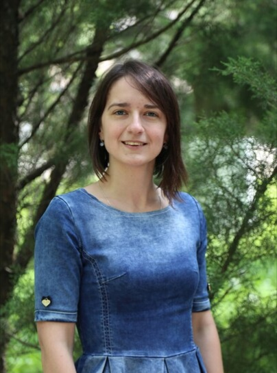

|  Полезная информация |
О себе
В 2017 г. закончила биологический факультет БГУ, специализировалась на кафедре клеточной биологии и биоинженерии растений. Защитила дипломную работу по теме «Действие брассиностероидов на рост протокорм-подобных тел и микрорастений Phalaenopsis × hybridum в культуре in vitro». С 2016 г. является стажёром младшего научного сотрудника НИЛ физиологии и биотехнологии растений. С 2017 г. работает на кафедре ассистентом, ведет лабораторные занятия по общему курсу «Физиология растений». Область научных интересов: исследование влияния брассиностероидов на рост и дифференцировку декоративных орхидей в культуре in vitro. Область научных интересов: Контактная информация |